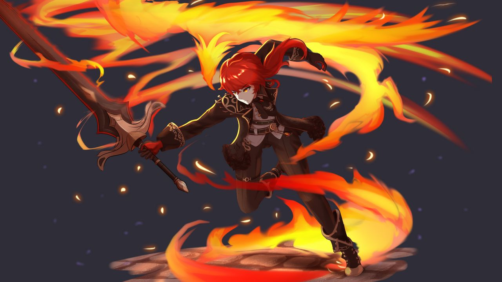

Diluc
I understand if you want to know how to get Diluc in Genshin Impact. With his luscious red hair, he's one of the most striking characters in the game, as well as one of its best fighters. He runs the Dawn Winery, making him enviably rich, but considering how hard it is to pull him, you might need to be awfully rich, too.
Diluc may be one of Genshin Impact's strongest characters, but his potential could be squandered if you waste a bad build on him. That's why, here, I'll go through Diluc's abilities and suggest some builds to help you make him your party's star DPS fighter.
